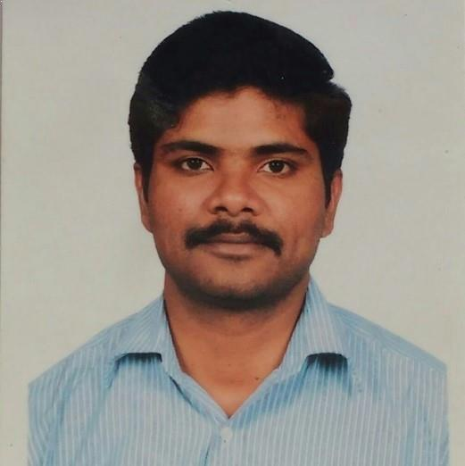

| 2021-2022 | 2022-2023 |
| Highest CTC-42 LPA | Highest CTC-58.93 LPA Above 30 LPA - 9 nos. |
| Average-10.45 LPA | Average-13.90 LPA |
| Individual Placements- 67 | Individual Placements- 74/82 |
| No.of Offers-212 | No.of Offers-120 |
| Latest News |
| Application for Junior Research Fellow (JRF) |
| Rolling advertisement for various faculty positions-Click here to apply |
| THE 4th INTERNATIONAL CONFERENCE ON INNOVATIVE TRENDS IN INFORMATION TECHNOLOGY (ICITIIT'23) |
| List of candidates provisionally selected for the PhD admission January 2023 |
| List of provisionally selected candidates for the M.Tech programme for working professionals (January-2023) |
| Registration for the EVEN Semester 2022-2023(Jan-April) |
| Meet the Faculty | ||

Dr Shajulin Benedict
Assistant Professor
|

Dr Bakkyaraj T
Assistant Professor
|

Dr Panchami
Assistant Professor
|
| Research Publications |
|
Image Restoration via Discrete Orthogonal Stockwell Transform and Total Variation RegularizationMore
- Dr.Bini.A.A
|
|
Hybridization and Torsion Defects influenced Electron Transport in Trans-PolyacetyleneMore
- KumarGaurav, BoddepalliSanthiBhushan, German Mino-Galaz, Gonzalo Gutierrez, AnuragSrivastava
|
|
A workflow runtime environment for manycore parallel architectures in Future Generation Computer SystemsMore
- M Janetschek - R Prodan - S Benedict
|